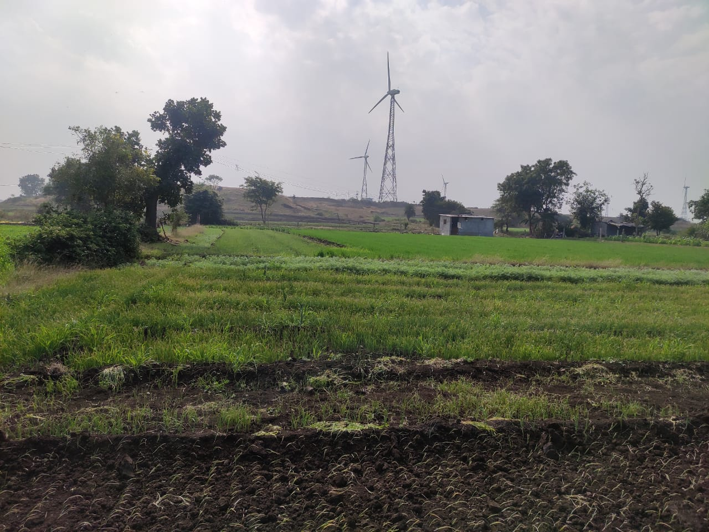
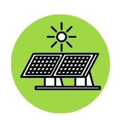

Your Complete Digital Companion for Modern Agronomy, Schemes, and Smart Farming Techniques.
Krishi Mitra is a centralized portal specifically designed for Indian Farmers to provide all essential agronomy information in one unified platform.
We provide a one-stop solution consisting of weather reports, real-time seed prices, and government scheme updates to help you maximize your agricultural yield while minimizing loss.

Everything you need to modernize your farming infrastructure.
Get accurate, real-time weather forecasts for your current location to plan your farming activities effectively.
Access live seed prices and comprehensive details about different high-yield crop varieties.
Stay updated on the latest government initiatives and financial aids designed to support farmers.

Learn about modern agronomy tools like high-efficiency solar panels and smart irrigation systems.
Optimized to load blazingly fast even on low-bandwidth rural internet connections.
A simple, premium user interface making complex data easy to understand at a glance.